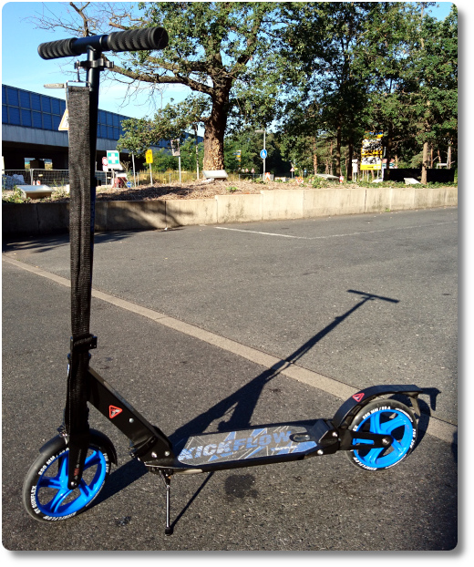

Huschhhh
So ein e-Roller ist eine tolle Sache. Klein, schnell, man kann ihn überall mit hin nehmen. Leider etwas teuer. Und man muss eine Versicherung dafür abschließen. Außerdem machen der Akku und der e-Motor die kleinen Flitzer auch sehr schwer.
Von daher... Habe ich mir vor ein paar Wochen einfach die low-Tech Variante gekauft. Tadaaa:
Was für ein geniales Teil: Höhenverstellbarer Lenker mit abnehmbaren Griffen. Zusammenklappbar für den Transport in den Öffis oder die Lagerung unterm Schreibtisch. Vorne und hinten eingebaute Federung. Diese und die großen Laufräder machen das Fahren über kleine Unebenheiten wirklich erträglich.
Mit dem Roller und Muskelkraft brauch' ich nur noch vier statt zehn Minuten von der Wohnung bis zum Bahnhof. Und das beste daran: Es macht Spaß. 😃